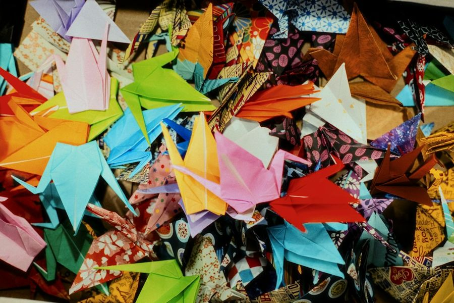
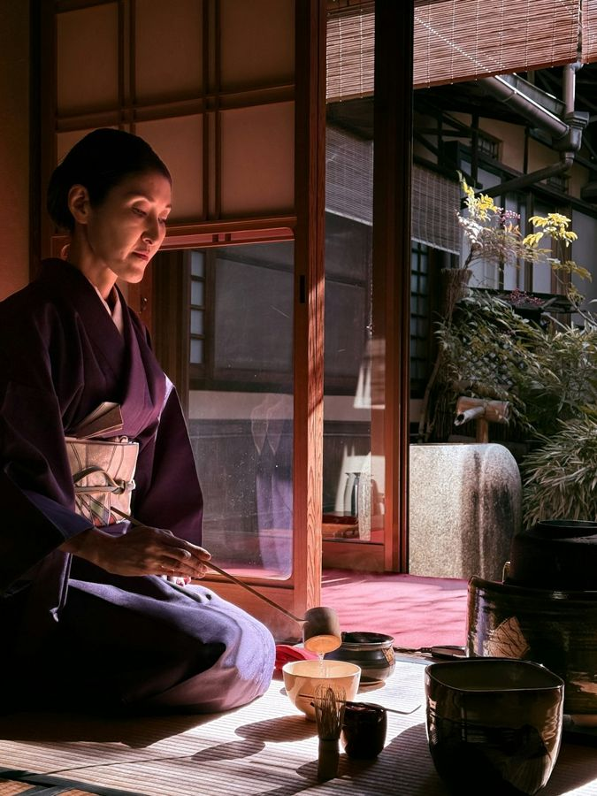

古希お祝い
Setenta años de historias, viajes y familia. Nos encantaría que nos acompañe.
Sábado 12 · diciembre · 2026
En Japón, los 70 años se llaman koki. El nombre viene de un poema chino del siglo VIII que decía que llegar a los setenta era raro desde la antigüedad.
El color del koki es el morado, que se reserva para las personas de mayor respeto. Y las grullas de papel, que según la tradición viven mil años, se regalan para desear salud y vida larga.


Ya estamos doblando las grullas.
Sábado 12 de diciembre de 2026
7:00 p. m.
Formal. Si lo desea, lleve un detalle morado en honor al koki.
Le recibimos con té verde y wagashi, los dulces japoneses de temporada.
Una demostración breve del chanoyu, preparada en honor a la señora Keiko.
Brindis con sake y unas palabras de la familia.
Menú japonés de varios tiempos, con opciones para cada invitado.
Cada invitado deja una grulla de papel con un deseo para ella. Tendremos papel en las mesas.
Por favor confirme su asistencia antes del 1 de diciembre. Los cupos de la embajada son limitados y cada invitado debe estar en la lista.
+504 9999-9999
Con cariño, la familia Watanabe